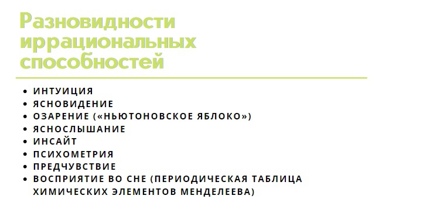

16. Проблема познаваемости мира и истины в истории философии. Философские концепции истины
Понятие — мысль, которая отражает предметы, явления и связи между ними в обобщенной форме. Например, понятие «человек» не тождественно простому чувственному образу какого-то конкретного человека, а обозначает в обобщенном виде мысль о любом человеке — кем бы он ни был. Аналогично понятие «стол» включает в себя образы всех столов — различной формы, размеров, окраски, а не какой-либо определенный образ стола. Таким образом, понятие схватывает не отдельные признаки предмета, а его сущность, в частности, в случае стола — его функции, использование (перевернутый ящик тоже может входить в понятие «стол», если он используется в таком качестве);
Традиционно выделяют две основные познавательные способности: рациональную и чувственно-сенситивную.

Рациональная познавательная способность – это способность к формированию понятий, суждений и умозаключений (они же есть и т.н. 3 главных формы рационального познания)
Чувственно-сенситивные способность – это способности к ощущениям, восприятиям и представлениям (они же т.н. 3 главных формы чувственного познания). В познавательную сферу входят также внимание и память.
В философии проблемами познания посвящен отдельный раздел – гносеология (с греч. «gnosis» - познание, «logos» - слово, учение, смысл). Почему такое внимание к проблемам познания? Потому что все, что человек знает о мире, о себе и о чем угодно еще есть результат познавательной деятельности. Т.е., то, что человек из себя представляет есть результат того, что он познает. Это во-первых. Во-вторых, человек не может не познавать, он не может отключить эту «опцию» в себе, т.к. не может по своему желанию «выключить» свое сознание и восприятие, благодаря которым познает что-либо. Даже, если ничего не делать, мысли будут приходить в голову, их не остановить. Также трудно, практически невозможно остановить и ощущения (звук, свет, обоняние, осязание, ощущения своего тела). Кстати, для этого есть специальное устройство – камера сенсорной депривации, или флоатинг-капсула (англ. float — свободно плавать, держаться на поверхности) — камера, изолирующая человека от большинства ощущений и позволяющая глубоко расслабиться, т.е. фактически перестать воспринимать внешний мир и таким образом отдохнуть (!) Этот пример говорит о том, что для человека восприятие мира и неразрывно связанное с этим его познание являются не только сильной стороной человека, инструментом преобразования всего, но и в некоторой степени бременем, наказанием и даже судьбой, от чего человек иногда хотел бы уйти, отстраниться или даже избавиться. Это так, потому что неизбежность познавать есть не что иное, как неизбежность постоянно решать какие-то вопросы, преодолевать проблемы, необходимость что-то совершенствовать и что-то развивать внутри себя или в мире. Иногда человека это сильно «напрягает» и он хочет просто забыться в силу разных обстоятельств (алкоголь, наркотики, праздный, т.е. бессмысленный образ жизни и т.д.), потому что познавать и давать ответы на возникающие постоянно вопросы сложно.
Истина - это цель, к которой устремлено познание. Истина есть знание. Знание о мире и даже об отдельных его фрагментах в силу ряда причин может включать в себя заблуждения, а порой и сознательное искажение истины, хотя ядро знаний и составляет, адекватное отражение действительности в сознании человека в виде представлений, понятий, суждений, теорий.
- опыт (практика), т.е. то, что проверено на опыте, подтверждено опытом, то есть истина. Проблема к том, что не все знания можно проверить таким путем (масса Солнца, например)
- теоретический критерий (соответствие знаний имеющейся теории и предыдущим знаниям - теориям)
- психологический критерий (внутреннее желание человека поверить, если знание «выглядит» убедительно, даже при наличии неполного доказательства, которое редко когда доступно)
- эстетический критерий (внешняя изящность, простота и привлекательность знания, лаконичность и стройность формул, гармония математических доказательств)
- классическая концепция истины (концепция соответствия) – истинно то, что соответствует действительности (реальности).
- когерентная концепция истины - под когерентностью понимают единство и непротиворечивость всех собранных знаний, информации, отсутствие проблем объединения знаний между собой, их «сборки» воедино
- прагматическая концепция истины - критерием истинности выступает практика (греческое слово «прагма» обозначает дело, действие). Истинно то, что, прежде всего, приносит пользу, поэтому необходимо на деле, в действии проверять суждения на истинность и ложность, не ограничивать себя лишь теоретическими рассуждениями.
- конвенциональная концепция истины – истина есть результат договора ученых, экспертов между собой, истина есть единый согласованный между людьми взгляд на вещи, их оценка и понимание (стандартизация и метрология, согласование стандарта, эталона метра, килограмма, секунды и т.д.).
17. Наука как высшая форма познания. Уровни, формы и методы научного познания
Наука - это познавательная деятельность общественного субъекта, направленная на выработку и развитие объективных, системно организованных и обоснованных знаний о законах реальности. Наука как специфический тип духовного пр-ва, как соц. институт возникает в Новое время (XV - XVII вв.), как деят-ть в XVII-XIXв.Развитие капитализма влияет на возникновение науки через господствующую идеологию - протестантизм. Протестантизм перестраивает обыденное сознание в духе рационализма и практицизма. Успех в делах объявляется богоугодным делом
Научное познание является высшей формой познания.
- Факт – знание о каком-либо событии, явлении, достоверность которого доказана
- Научная проблема – это ситуация, когда существует необходимость теоретического объяснения фактов, существенный вопрос относительно конкретного предмета научного исследования. Результат постановки проблемы – это идея или гипотеза, а результат решения проблемы – это теория.
- Идея – абстрактная догадка о сущности происходящих явлений, которая является исходным началом для систематизации знаний и построения теорий.
- Гипотеза – это обоснованное предложение, выдвигаемое с целью выяснения закономерностей и причин исследуемых знаний, это высказанное в вероятностной, предположительной форме объяснение изучаемых процессов.
- Теория – это качественная форма научного знания, существующая как система логически взаимосвязанных предложений, отражающих закономерные, общие и необходимые внутренние связи определенной предметной области, т.е. это истинное знание, изложенное в виде системы.
Уровни научного познания: различают два уровня научного познания - эмпирический и теоретический. (Можно сказать также - эмпирическое и теоретическое исследование.) Эмпирический уровень научного познания включает в себя наблюдение, эксперимент, группировку, классификацию и описание результатов наблюдения и эксперимента, моделирование. Теоретический уровень научного познания включает в себя выдвижение, построение и разработку научных гипотез и теорий; формулирование законов; выведение логических следствий из законов; сопоставление друг с другом различных гипотез и теорий, теоретическое моделирование, а также процедуры объяснения, предсказания и обобщения. Соотношение эмпирического и теоретического уровней научного познания: отчасти это как соотношение теории практики с оговоркой, что на низших уровнях эмпирического исследования преобладают формы чувственного познания, а на высших уровнях теоретического исследования - формы рационального познания. Т.е., чем сложнее и глубже явление, процесс, объект, который мы изучаем, тем больше требуется от нас продуктивных мыслей, идей, а не чувственных данных, наблюдений, т.е. нужно больше думать, а не просто воспринимать и описывать (например, все, что касается исследований глубокого космоса, вещества «черных дыр», «антиматерии» и т.д., которые фактически недоступны нам на эмпирическом уровне).
- Инновационность – создание новых полезных научных разработок по схеме: фундаментальные исследования («наука для науки») –прикладные исследования – полезные (применимые) модели – конструкторские разработки (прототипы) – производство, серийный выпуск продукции (кратко вся схема звучит так: «наука-техника-производство»)
- Институциональность – наука есть значимый социальный институт - она не только дисциплинарно (внутри), но и социально (внешне) организована (по ступеням) – школа, техникум, вуз, академия наук, имеется строгая градация научных степеней, квалификации, должностей (соискатель, аспирант, практикант, стажер, кандидат наук, доктор наук, академик, младший научный сотрудник, старший научный сотрудник, зав. лабораторией и т.д.), функционирует сеть научно-исследовательских институтов, научных объединений, ассоциаций, научных фондов, существуют профсоюзы научных работников и т.д. Т.е. наука это мегаиндустрия.
- Фундаментальность – наука приобретает все большее влияние в системе культуры общества, постепенно потесняя философию, нравственность (мораль), искусство, религию и т.д. От науки зависимы как система образования, так и экономика, социальное, политическое управление и прогнозирование, формирование мировоззрения человека и др.
Метод (с греч. – «путь исследования, познания») – совокупность правил, приемов и операций практического и теоретического освоения действительности.
Методология – система взаимосвязанных методов, учение об их использовании, общая теория метода.
- Классическая рациональность – оформилась в эпоху Нового времени, основные идеи: поиск универсальной методологии, основы, принципы строгости, точного расчета и идеологической непредвзятости в исследовании, доминирование наблюдения и эксперимента, недопустимость изменчивости и вариативности в получаемых знаниях, детерминизм.
- Неклассическая рациональность – оформилась благодаря научным достижениям конца XIX – начала XX вв. (физика - открытие делимости атома, релятивистская и квантовая теория, космология – концепция нестационарной Вселенной, становление генетики, кибернетики и теории систем), основные идеи: отказ от поиска «абсолютного, универсального» метода познания, разработка вероятностных, статистических, сравнительных подходов, использование принципа «самокритики» науки, дополнение детерминизма индетерминизмом.
- Постнеклассическая рациональность- Постнеклассическая рациональность – вторая половина XX в. и продолжает оформляться в настоящее время, основные идеи: интерес к комплексным и междисциплинарным исследованиям, человек (субъект науки) и мир (объект) далеко не разделены, человек есть часть биосферы и космоса, утверждение идеи «морального разума» - ученый не может быть морально, аксиологически нейтральным разработка профессиональных и этических кодексов ученого, выдвижение идеи о социальной ответственности исследователя, взаимной ответственности всего научного сообщества, как части человечества. – вторая половина XX в. и продолжает оформляться в настоящее время, основные идеи: интерес к комплексным и междисциплинарным исследованиям, человек (субъект науки) и мир (объект) далеко не разделены, человек есть часть биосферы и космоса, утверждение идеи «морального разума» - ученый не может быть морально, аксиологически нейтральным разработка профессиональных и этических кодексов ученого, выдвижение идеи о социальной ответственности исследователя, взаимной ответственности всего научного сообщества, как части человечества.